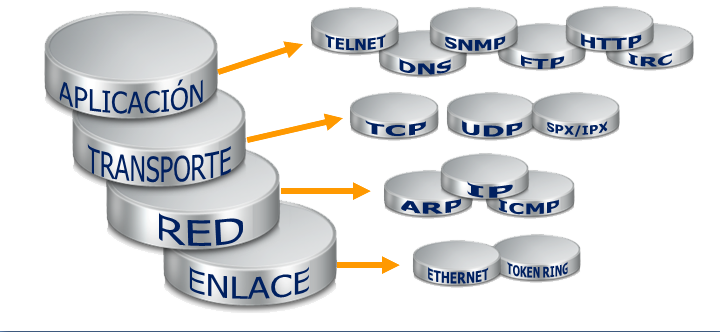

Protocolos de Red
Un protocolo es una descripción formal de un conjunto de reglas y convenciones que rigen un aspecto particular de cómo los dispositivos de una red se comunican entre sí.
Los protocolos determinan el formato, la sincronización, la secuenciación y el control de errores en la comunicación de datos. Sin protocolos, el computador no puede armar o reconstruir el formato original del flujo de bits entrantes desde otro computador

Los protocolos controlan todos los aspectos de la comunicación de datos, que incluye lo siguiente:
- Cómo se construye la red física
- Cómo los computadores se conectan a la red
- Cómo se formatean los datos para su transmisión
- Cómo se envían los datos
- Cómo se manejan los errores
Estas normas de red son creadas y administradas por una serie de diferentes organizaciones y comités. Entre ellos se incluyen:
- Instituto de Ingeniería Eléctrica y Electrónica (IEEE)
- Instituto Nacional Americano de Normalización (ANSI)
- Asociación de la Industria de las Telecomunicaciones (TIA)
- Asociación de Industrias Electrónicas (EIA)
- Unión Internacional de Telecomunicaciones (UIT), antiguamente conocida como el Comité Consultivo Internacional Telegráfico y Telefónico (CCITT).
BÚSQUEDAS RELACIONADAS
Dispositivos de red (intermediarios)
Topologia Fisica de Red